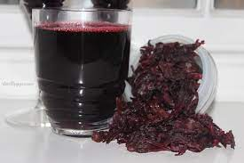

Delicious Zobo drink

Description
Zobo is one of the most popular indigenous drinks in Nigeria. It is taken by all Nigerians from north, south, east and west zobo has no enemy.
Zobo is made from the dried hibiscus flower rich in iron. Zobo is ultra easy to make and requires no special skills
Ingridents
- Zobo leaf
- water
- Sweetner(sugar, jolly juice, foster clarks)
- Filter/sieve
Steps
- Wash the zobo leaf in water to get rid of sand
- Put a pot of water on the stove and boil
- As the water boils, add the washed zobo leaf into the pot of boiling watr and allow to boil for an hour.
- After it's boiled allow to cool then filter to get rid of the leaf
- Then add the sweetener of your choice
- Place in the fridge to cool
- Enjoy
You see, really easy to make.
github.com/Emman-IN